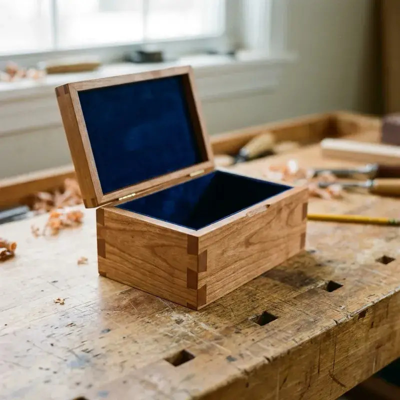

Building the Dovetailed Tea Box

Small projects often present the biggest challenges. This tea box, inspired by a classic Fine Woodworking design, is a masterclass in texture, contrast, and the "box-within-a-box" concept.
When I first saw the project guide for this dovetailed tea box, I knew I had to build it. It’s not just a container; it’s a study in how different textures and wood species can live together in harmony. While a large dining table allows for broad strokes, a small box demands perfection. The viewer is invited to inspect it up close, to touch the corners, and to open the lid. There is nowhere to hide mistakes.
The Concept: A Box Within a Box
The core design is unique—essentially, it’s a structural liner containing the dividers, surrounded by an aesthetic shell. The outer box features beautiful through-dovetails that showcase the end grain, while the inner box provides the structural support and holds the tea dividers.
This dual-layer approach solves a common problem in box making: how to handle the lid and the bottom without complicating the joinery. By having an inner liner that stands slightly proud of the outer shell, the lid can register perfectly on top, creating a tight seal without the need for complex hinges or hardware. It’s a friction fit that feels incredibly satisfying to operate.
Step 1: Material Selection and Contrast
For my version, I chose a dark, rich walnut for the outer shell to provide a grounding presence. For the inner box and dividers, I used a lighter cherry.
Why this combination? Walnut and Cherry are the classic "American Contrast." The walnut starts dark and lightens slightly with age, while the cherry starts pink and deepens to a rich russet brown. Over decades, the two woods move closer in tone but never quite meet.
The grain selection is critical. For the sides, I looked for straight, rift-sawn grain. Wild, figured grain can be distracting on a small box and makes cutting crisp dovetails much harder. The "quiet" grain allows the joinery to be the star.
Step 2: Cutting the Dovetails
There is no shortcut for dovetails on a piece this size. Every tail and pin was marked out and cut by hand.
The Process:
- Layout: I use a marking gauge to scribe the baseline exactly to the thickness of the mating piece. For a box this small, I like a 1:6 ratio for the tails—it looks elegant and refined.
- Sawing: Using a Japanese dozuki saw, I cut the tails first. The thin kerf of the Japanese saw allows for incredible precision.
- Chopping: I remove the waste with a freshly sharpened chisel. The key here is to chop halfway from one side, then flip the board. This prevents "blowout" on the inside face.
- Fitting: The moment of truth. The joint should fit together with a few light taps of a mallet. If it requires a hammer, it's too tight and will split. If it falls together, it's too loose. It needs to fit like a "piston."
Step 3: Creating the Texture
One of the standout features of this design is the texture on the outer shell. Instead of sanding it perfectly smooth, I used a small block plane with a slightly cambered (curved) blade to create a scalloped texture.
This technique requires confidence. You are essentially taking a finished, joined box and intentionally creating an uneven surface. But the result is tactile magic. When you hold the box, your fingers find the shallow grooves. When the light hits it, it casts subtle shadows that machine-sanded wood simply cannot replicate. It feels "made."
Step 4: The Interior & Dividers
The interior needs to be crisp and clean. I planed the cherry stock down to a delicate 1/4" thickness. The dividers are half-lapped, meaning notches are cut in each piece so they slot together like an egg crate. This friction fit holds them in place without glue, allowing for easy cleaning or removal if the box's purpose changes later.
Finish Strategy
I followed the guide's advice and avoided film finishes like polyurethane, which would fill in the texture and make the box feel plastic. instead, I used a custom blend of boiled linseed oil, beeswax, and turpentine.
This finish is rubbed in by hand, saturating the wood fibers and hardening within them. It leaves the wood feeling like wood—warm and soft. It offers enough protection for a tea box while allowing the aromatic qualities of the tea and the wood to mingle.
Building this tea box was a reminder that excellence isn't found in the size of the project, but in the care taken with every joint. It's a small object that holds a lot of philosophy.
The Joinery Challenge
Master the terminology of fine furniture making.
Across
- 3 The "king of joints" used in this tea box
- 5 The dark, rich wood used for the box body
Down
- 1 This box is named for a ______ box
- 2 Wooden tool used to tap joints together without damage
- 4 The type of hinge used for the lid